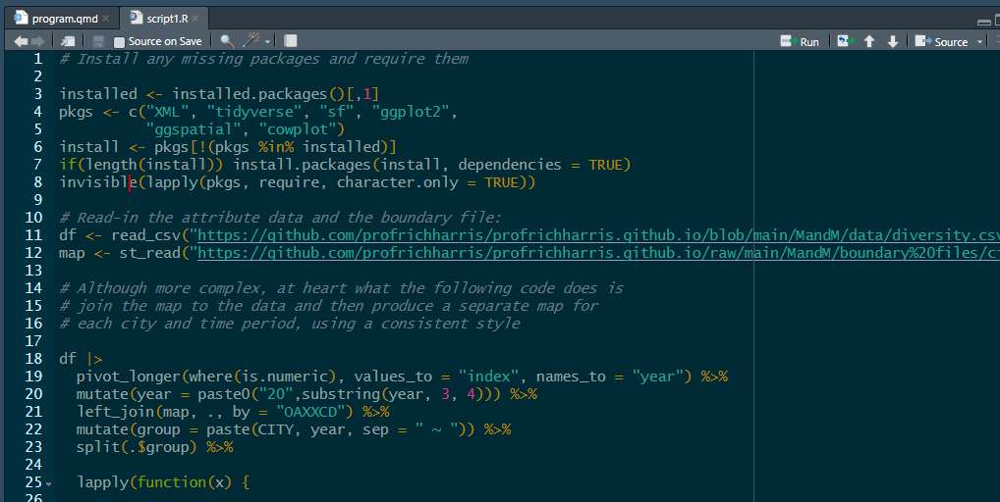
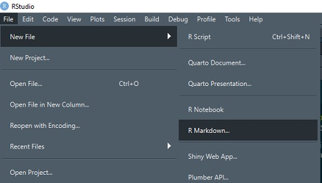
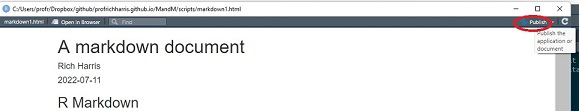

Code
download.file("https://github.com/profrichharris/profrichharris.github.io/raw/main/MandM/scripts/script1.R",
"script1.R", mode = "wb", quiet = TRUE)So far in this course we have been cutting and pasting from these webpages into the Console of R Studio. Working in the Console is useful if you want to work with code on a line-by-line basis – sometimes it is helpful to see if something will work; to try things out. However, in practice, it is better to write and work with more reproducible code, either for your own benefit so you can modify something without having entirely to start-over, or for the benefit of others who would like to reproduce your work. Reproducibility is an important component of open research and is to be encouraged wherever possible.
A script is a text file containing a sequence of commands that can be run together, one after the other, without entering them separately in the Console. Let’s download an example of a script:
download.file("https://github.com/profrichharris/profrichharris.github.io/raw/main/MandM/scripts/script1.R",
"script1.R", mode = "wb", quiet = TRUE)You can now use file.edit("script1.R") to view its contents. It should look like this:

The script is based on the opening parts of Geographic Data in ipumsr, where ipumsr provides “an easy way to import census, survey and geographic data provided by ‘IPUMS’ into R”, and IPUMS “provides census and survey data from around the world integrated across time and space.” I have modified their code for greater consistency with other parts of this course but what it does is largely the same:
If you now click within the window of the script and use command-A (Mac) or ctrl-A (Windows) to select all the code, followed by command-Enter/Return (Mac) or ctrl-Enter/Return (Windows) – or use the Run button towards the top-right of the script window – then the script will run in its entirety and should, at its conclusion, produce the following maps.

Be patient whilst the code takes a few moments to run.

Try also typing source("script1.R", echo = TRUE) into the R Console. Again, the script should run in its entirety.
As suggested earlier, an advantage of using a script is that it is easy to make changes to and then re-run it either in part or in full. In the script, find the type = "cartolight" argument in the line that says annotation_map_tile(type = "cartolight", progress = "none") + and change the type to any other of the following, such as cartodark.
rosm::osm.types() [1] "osm" "opencycle" "hotstyle"
[4] "loviniahike" "loviniacycle" "hikebike"
[7] "hillshade" "osmgrayscale" "stamenbw"
[10] "stamenwatercolor" "osmtransport" "thunderforestlandscape"
[13] "thunderforestoutdoors" "cartodark" "cartolight" If you wish to view what the different types look like, you can do so here.
Once you have made the change, select the parts of the script you wish to rerun (everything under Map the data should be sufficient) and press the Run button or hit command-Enter/Return (Mac) or ctrl-Enter/Return (Windows) to execute the selected code.
:: notationThe use of the :: notation in the code rosm::osm.types() allows a function to be run from a package that has not been loaded. In the example, osm.types() is a function in the rosm package. That package provides access to Open Steet Map and other maps tiles. We could also require(rosm) and then use the function directly as we have in other cases, i.e. using osm.types() instead of rosm::osm.types(). However, sometimes, if a function only is to be used once then there is no need to require the whole package. Also, sometimes we load multiple packages that have functions within them that share the same name. In such circumstances, the package::function format may be required to make sure the correct function (from the correct package) is being called.
Scripts are useful but sometimes we wish to author documents that combine written text such as this with executable R code and its outputs and to publish them as html, pdf or Word documents. This is where R Markdown is useful.
From the dropdown menus, select File -> New File -> R Markdown. Create the document in html format and give it any title you like.

After R Studio has created the document, Knit it. The first time you do this, you will be asked to save the document - call it markdown1.Rmd or any other name you prefer.

It is self-evident what knitting the document does – it produce an html file which includes the text and formatting, the R code (unless suppressed with echo = FALSE) and output from that code. It also includes the option to publish the document on RPubs (although I suggest you don’t do this now).

This whole course is written based on R Markdown. You can download the markdown file for this session
download.file("https://github.com/profrichharris/profrichharris.github.io/raw/main/MandM/markdown/programming.Rmd", "markdown_example.Rmd", mode = "wb", quiet = TRUE)and view it using file.edit("markdown_example.Rmd"). You may note that it begins with a YAML header, to which various arguments can be added or changed – see here for an introduction.
---
title: "Programming"
author: "Rich Harris"
date: '2022-07-11'
output: html_document
---It then consists of a mixture of text and code chunks. Those code chunks can be executed within the document using the Run drop-down menus and buttons.

The document also includes various syntax, including ##header for a header, **bold** for bold,  to insert an existing image file, and so forth. To learn more, see the R Markdown cheatsheet.
This page has actually been authored in a variant of R markdown, using quarto. You can view the source code for this and other pages using View Source from the drop-down Code options at the top of the page.

Although a lot of what we will do in this course will involve cutting and pasting into the Console, keep in mind that there are better ways of programming that are more reproducible than entering commands one at a time into the Console. These include scripting and using markdown. Note also that as commands are entered into the Console, they are saved in the History to the top right of the screen. All or part of that history can be selected and moved to a source file (a new R Script) as the following shows. The history can also be saved – see ?save.history().


The book, Efficient R programming by Colin Gillespie and Robin Lovelace has an online version here.
More about R Markdown can be learned from https://rmarkdown.rstudio.com/.